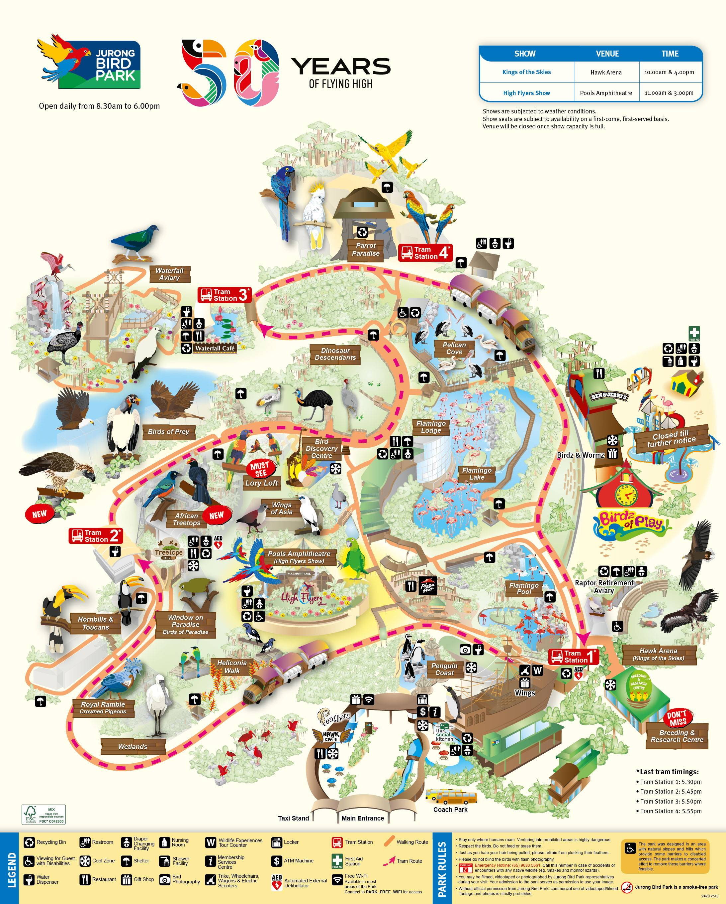

Wildlife Reserves Singapore (WRS) is dedicated to the management of these world-leading zoological institutions:
Wildlife Reserves Singapore (WRS) is dedicated to the management of world-leading zoological institutions-Jurong Bird Park, Night Safari, River Safari and Singapore Zoo - that aim to inspire people to value and conserve biodiversity by providing meaningful and memorable wildlife experiences.
A self-funded organisation, WRS focuses on protecting biodiversity in Singapore and Southeast Asia through collaborations with like-minded partners, organisations and institutions. Each year, the four attractions welcome 4.6 million visitors.
Opened in 1971, Jurong Bird Park is Asia’s largest bird park, offering a 20.2-hectare hillside haven for close to 3,500 birds across 400 species, of which 20 per cent are threatened. The bird park is famed for its large and immersive walk-in aviaries such as Lory Loft and the recently revamped Waterfall Aviary. Other unique exhibits include Penguin Coast and Pelican Cove. Jurong Bird Park sees approximately 850,000 visitors annually.
Committed towards conservation, the bird park is the first in the world to breed the Malayan black hornbill (1995) and the twelve-wired bird of paradise (2001) in captivity for which it received the Breeders’ Award from the American Pheasant and Waterfowl Society. Jurong Bird Park is part of Wildlife Reserves Singapore and is the only park in the Asia Pacific to have an Avian Hospital.
Home to South American toucans and the world's largest collection of Southeast Asian Hornbills
Explore the park with ease!
Click here for 简体中文
 Night Safari, the world’s first nocturnal wildlife park, is a 13-time winner of the Best Attraction category awarded by Singapore Tourism Board. This internationally acclaimed leisure attraction embodies innovation and creativity in products and services, and service quality, thus attracting approximately 1.3 million visitors annually. Close to 900 animals from approximately 100 species (of which almost 41 per cent are threatened) inhabit the 35-hectare park.
In line with its mission to promote biodiversity, the park focuses on the captive breeding of threatened species. Over the years, it has bred Malayan tigers, Asian elephants, fishing cats, red dholes, anoas, markhors, bantengs, Malayan tapirs and Asian lions, among other threatened species.
The crossroad between Africa and Asia, where the animals of the savannah and tropics live side by side
Bringing you down under to the natural wonders and wildlife of Australia, New Zealand and New Guinea.
River Safari, the newest addition to Wildlife Reserves Singapore’s portfolio of award-winning parks, is Asia’s first and only river-themed wildlife park. Occupying 12 hectares and developed at S$160 million, the park is home to 400 plant species and over 7,500 aquatic and terrestrial animals representing close to 240 species, including one of the world’s largest collections of freshwater animals.
River Safari aims to inspire visitors to appreciate and protect fragile freshwater ecosystems, and is home to threatened species such as the giant panda, manatee and Mekong giant catfish. These magnificent animals are housed in themed exhibits that mirror iconic rivers of the world from the Mississippi to the Amazon.
Explore the park with ease!
Click here for 简体中文
Set in a rainforest environment, Singapore Zoo's world-famous "Open Concept” offers the opportunity to experience and be inspired by the wonders of nature. Home to more than 2,400 specimens of over 300 species, 34 per cent of which are threatened, the Zoo has attained a strong reputation internationally for its conservation initiatives and breeding programmes.
To better meet the healthcare needs of its animals and working towards its aspiration to become a leading global centre of excellence for veterinary healthcare and research, a purpose-built Wildlife Healthcare and Research Centre was set up in March 2006.
Annually, approximately 1.9 million visitors enjoy experiential learning journeys at the 26-hectare award-winning Zoo. Singapore Zoo is part of Wildlife Reserves Singapore. The Zoo is a designated rescued wildlife centre by the governing authority.
A new 8000 m^2 exhibit giving an experimental peak into Ethiopian wildlife
Home to over 60 species of reptiles and amphibians, come experience a ‘snake’-tacular zone
Replicating a rainforest habitat, Treetops Trail showcases animals at different layers of a forest
Explore the park with ease!
Click here for 简体中文
© Copyright 2021, Wildlife Reserves Singapore Group. All rights reserved.
Jurong Bird Park, Night Safari, River Safari, Singapore Zoo and Wildlife Reserves Singapore are trademarks or registered trademarks of WRS Group in Singapore and/or other countries.